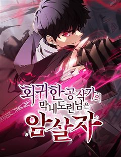
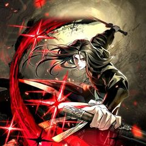
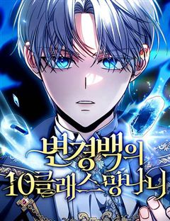
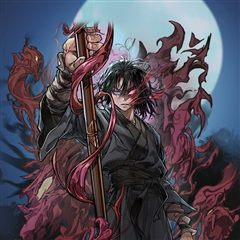
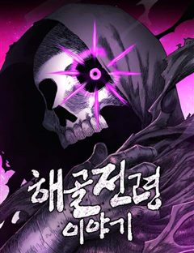

액션 어둡고 자극적인 웹툰 추천 TOP 30
액션 작품 중에서 자극적인, 다크판타지, 시리어스, 악역이주인공 같은 요소가 들어간 작품만 골랐어요. 네이버웹툰·카카오웹툰·레진코믹스에서 조건에 맞는 작품 102개 중 인기 순으로 30개를 골랐어요. 인기 TOP 3: 외모지상주의, 참교육, 군림천하
2026-10-03 기준 · 성인 작품 제외
내 취향으로 더 좁혀서 추천받기 →-
1
 네이버웹툰
네이버웹툰외모지상주의
못생기고 뚱뚱하다고 괴롭힘을 당하며 루저 인생만 살아온 내가 잘생겨졌다는 이유로 인싸가 됐다. 어느 날 자고 일어났더니 갑자기 완벽한 외모와 몸을 지닌 사람이 되어 깨어난다면?
액션복수극사이다학원액션소년물네이버웹툰에서 보기 → -
2
 네이버웹툰
네이버웹툰참교육
무너진 교권을 지키기 위해 교권보호국 소속 나화진의 참교육이 시작된다! <부활남> 채용택 작가 X <신석기녀> 한가람 작가의 신작!
액션자극적인사이다학원액션사회고발네이버웹툰에서 보기 → -
3
 카카오웹툰
카카오웹툰군림천하
"너만은 꼭 군림천하 해야 한다!” 그 한마디로 진산월의 운명이 결정됐다. 스물세 살, 그는 종남파의 장문인이 되었다. 남은 이들은 단 8명의 제자뿐. 한때 천하제일을 꿈꿨지만, 지금은 명맥만을 잇는 문파. 사부의 유지를 위해, 살아남기 위해— 진산월은 비정한 강호로 나아간다.
액션자극적인성장물카카오웹툰에서 보기 → -
4
 네이버웹툰
네이버웹툰김부장
“제발 안경 쓴 아저씨는 건들지 말자…” 오직 자신의 딸 '민지'를 위해 특수요원직을 관두고 평범함을 선택한 가장 김부장. 그러던 어느 날 민지가 소리소문 없이 사라지고, 김부장은 자신을 감시하는 국가를 적으로 돌리면서까지 딸을 찾아나서기 시작하는데... [외모지상주의], [싸움독학]…
액션자극적인시리어스사이다가족네이버웹툰에서 보기 → -
5
 네이버웹툰
네이버웹툰사신소년
수명을 대가로 죽은 자의 능력을 빌리는 소년! 화려한 액션에서 부터 스포츠, 두뇌 플레이까지 한계는 없다!
액션다크판타지액션판타지학원액션현대네이버웹툰에서 보기 → -
6

-
7

-
8
 네이버웹툰
네이버웹툰별을 품은 소드마스터
기사를 동경하는 슬럼가의 부랑아 블라드. 검은 벼락을 맞는 사고 이후부터 들리기 시작한 누군가의 목소리와, 어느 날 갑자기 등장한 푸른 달빛의 기사가 블라드의 세계를 산산조각내면서 뒷골목 소년의 삶이 송두리째 변하기 시작하는데... 높디높은 밤하늘에 있지 않더라도, 아무도 보지 못하는…
액션시리어스중세판타지액션서양소년물네이버웹툰에서 보기 → -
9
 카카오웹툰
카카오웹툰무장 - 무투전
고려를 지키는 무신이라 불리는 권. 그의 어린 시절부터 이야기는 시작된다. 주인공 권과 그의 형 정은 고려에서 가장 강했던 무인이자 노비였던 만적의 아들들이다. 아버지 만적이 노비 해방 운동을 일으키지만 실패로 끝나고 죽음을 맞자 정과 권은 누군가로부터 계속해서 목숨을 위협받는다. 살…
액션자극적인복수극카카오웹툰에서 보기 → -
10
 네이버웹툰
네이버웹툰백XX
정보사(HID) 요원 '백이수'와 범죄 조직의 보스인 쌍둥이 형 '백도경'. 같은 얼굴 다른 삶을 살아온 쌍둥이 형제. 조직에 배신당한 동생은 자신의 신분을 버리고 형이 되기로 한다. 정보사요원, 범죄 조직의 보스가 되다...!
액션자극적인시리어스복수극가족네이버웹툰에서 보기 → -
11
 네이버웹툰
네이버웹툰66666년 만에 환생한 흑마법사
강대했던 흑마법사 디아블로 볼피르. 12신의 계략에 당해 억겁 속에 봉인되었지만, 그로부터 66666년이 흘러 다시금 이 땅에 강림한다! "응애!" 웰턴 백작의 갓 태어난 장남으로. 딥다크 매직 판타지 시작!
액션다크판타지중세판타지액션서양신화네이버웹툰에서 보기 → -
12
 네이버웹툰
네이버웹툰마도전생기
정파무림 의천맹의 최강 살수, 천하진. 자유를 찾기 위해 탈출을 감행하지만 코앞에서 목숨을 잃고 만다. 그런데… '신교불패, 만마앙복. 삼공자님의 쾌유를 경하드리옵니다!' 무림의 공적, 마교의 삼공자로 전생해버렸다?! 정파무림 최강 비밀병기 천하진의 마도무림 정복기.
액션악역이주인공전쟁지금추천작성장물네이버웹툰에서 보기 → -
13
 네이버웹툰
네이버웹툰천마육성
마교의 태왕각주 ‘사마귀’의 명령으로 화산파 출몰 지역으로 파견나간 비객조. ‘설휘’는 화산파의 절대고수 ‘구종명’에게 죽임을 당할 위기에 처한다. 그때 눈 앞에 상태창이 나타나고 정찰 임무를 받기 직전으로 회귀하게 된다. 설휘는 자신이 전생에서 죽임을 당했던 똑같은 임무를 받게 되자…
액션자극적인시리어스악역이주인공동양네이버웹툰에서 보기 → -
14
 네이버웹툰
네이버웹툰히어로 킬러
전쟁은 빌런들의 패배로 막을 내렸다. 이제 세상은 부패한 히어로들이 지배하고 있다. 그리고, 그런 히어로들 중 하나가 이화의 언니를 죽였다. 언니를 죽인 게 누구인지는 모르지만 상관없다. 한 놈씩 죽이다 보면 그중에 있을 테니까. 이화는 매일 밤 영웅들을 사냥하는 빌런, 히어로 킬러가…
액션자극적인악역이주인공빌런사이다네이버웹툰에서 보기 → -
15
 네이버웹툰
네이버웹툰절대검감
단전이 부숴졌다는 이유로 집에서는 내놓은 자식 취급을 받던 소운휘는 혈교에 납치되어서도 삼류 첩자로 살아왔다. 어느 날, 전설로만 알려진 검선비록을 찾는데 이용당하다 죽은 운휘는 10년 전, 혈교에 납치되던 그 날로 돌아가게 되고 검의 목소리를 듣는 신비한 능력을 얻는다.
액션복수극동양이능력모험네이버웹툰에서 보기 → -
16

네이버웹툰회귀한 공작가의 막내도련님은 암살자
대륙 제일의 암살자 시안 베르트 평생을 믿고 따랐던 형에게 배신당한 뒤, 비참한 최후를 맞이한다. 만약 내게 한 번 더 생이 주어진다면 그때는 다른 삶을 살 것이다. 오로지 나 하나만을 바라보면서, 내 스스로 모든 것을 이룰 수 있는 누구도 섬기지 않는 그런 삶을. 그렇게 맞이하게 된…
액션복수극레드아이스 스튜디오액션판타지왕족/귀족네이버웹툰에서 보기 → -
17
 네이버웹툰
네이버웹툰회귀한 용병은 다 계획이 있다
몰락한 페르디움 가문의 복수를 위해 대전쟁을 일으킨 대륙 7강 용병왕 지셀 페르디움. 모든 복수가 순조롭게 마무리되던 와중, 예상치 못한 인물 아이던이 등장해 지셀의 계획을 무마시키고 그의 목을 벤다. 그렇게 지셀은 죽을 줄 알았지만, 눈을 떠보니 가문이 몰락하기 전의 어린 지셀로 회…
액션복수극액션판타지참교육미친작화네이버웹툰에서 보기 → -
18
 네이버웹툰
네이버웹툰킬러경찰
조직의 배신으로 죽게 된 전설의 킬러 ‘비광’, 경찰 ‘김경수’의 몸으로 환생한 그는 자신을 배신했던 킬러조직 화국사에게 복수를 다짐한다.
액션복수극현대동양환생네이버웹툰에서 보기 → -
19카카오웹툰
수라전설 독룡
유구한 역사를 자랑하는 약문(藥門)들의 잇따른 멸문지화. 시체가 산처럼 쌓이고 피가 바다처럼 흐르는 절망의 지옥에서 마침내 수라(修羅)가 눈을 뜬다. 하나도 남김없이 모두 죽일 것이다. 놈들을 전부 죽일 때까지 절대로 끝내지 않아. 약문 백화절곡의 유일한 생존자 진자강. 먼 훗날 강호…
액션자극적인복수극카카오웹툰에서 보기 → -
20
 네이버웹툰
네이버웹툰종말에서 살아남기
평생 지하실에 감금되어 훈련받은 소년. 그리고 그를 가둔 미치광이 아빠가 하는 말 "종말이 온다." 지금껏 수없이 반복해온 훈련과 생존 지식으로 종말에서 살아남아야만 한다.
액션시리어스생존크리처스릴러네이버웹툰에서 보기 → -
21
 네이버웹툰
네이버웹툰사형집행관
히어로 시절에 죽이지 못하고 감옥에 수감시켜 놓았던 빌런들. 이제는 교도관이 되어 자신의 손으로 사형을 집행한다.
액션자극적인복수극빌런사이다네이버웹툰에서 보기 → -
22
 네이버웹툰
네이버웹툰소년교도소
조폭인 아버지를 식물인간으로 만들어 소년교도소에 수감된 ‘차주영’. 얼마 뒤, 깨어나지 못할 거라 여겼던 아버지가 찾아와 말한다. “아들아, 내가 너의 소꿉친구를 죽였다” 그런 아버지에게 복수할 방법은 단 하나 ‘이 교도소를 장악하는 것’
액션복수극가족혐관사연남네이버웹툰에서 보기 → -
23

-
24
 네이버웹툰
네이버웹툰빌런투킬
동료를 살해했다는 억울한 누명을 쓰고 사망한 카시안. 모든 게 끝이라고 생각한 순간. 그의 영혼은 어느 소년의 몸에 빙의되어 빌런으로 각성한다. 선망의 대상이자 대중의 지지를 받던 탑클래스 싸이커였던 그가 하루아침에 빌런이 되다니! 그는 자신의 운명을 받아들이기 힘들다. 복수와 분노!…
액션악역이주인공복수극피카레스크사이다네이버웹툰에서 보기 → -
25
 네이버웹툰
네이버웹툰왕따가 격투기를 너무 잘함
종합격투기 선수 차무결은 장회장의 꼬임에 넘어가 무체급 격투기를 하던중 식물인간이 된다. 이후 장회장의 이미지 쇄신용으로 이용당하는 차무결. 결국 죽게되는 그는 동명의 고등학생 차무결의 몸에 빙의된다. 내구도 s급의 단단한 몸. 격투기 능력을 업그레이드 시켜 줄 수 있는 상태창 능력.…
액션복수극사이다현대판타지현대네이버웹툰에서 보기 → -
26
 네이버웹툰
네이버웹툰레드셔츠
킬러 회사의 전설, 차시혁. 사랑하는 여자를 만나 은퇴를 결심하지만, 회사는 그를 쉽게 놔줄 생각이 없었다. 결국, 그의 모든 것을 앗아가기 시작하고, 차시혁은 다시 칼을 든다. 복수가 시작되고, 거대한 조직 ‘네빌가’와의 전쟁도 피할 수 없게 되는데… 복수의 칼날 끝, 과연 무엇이…
액션복수극전쟁미친작화요즘핫한추천작네이버웹툰에서 보기 → -
27

카카오웹툰신마대제
정체불명의 살수에게 할아버지를 잃은 소년, 부은설. 복수를 위해 마도십문 무학과 피의 실전을 삼켜 무림 최강으로 거듭난다. “반드시 찾아내 죽여주마.” 지금, 천하만마의 성지에서 무림을 집어삼킬 신마(神魔)가 눈을 뜬다.
액션자극적인복수극카카오웹툰에서 보기 → -
28

네이버웹툰변경백의 10클래스 망나니
칠십대의 늙고 추레한 마법사는 육십 년 전으로 돌아온다. 아주 오래된 그리워하던 어떤 날로…….
액션시리어스액션판타지감성적인중세네이버웹툰에서 보기 → -
29

카카오웹툰창귀무쌍
평생 전장 만을 활보하며 살아온 늙은 노병 '추이'는 자신이 죽여 온 자들의 원념에 사로잡혀 죽음에 이른다. 추이가 다시 눈을 떴을 때, 이유는 알 수 없지만 아직 무공도 배우지 못하고 쟁자수로 일하던 어린 시절로 회귀해 있었다. 다시 돌아온 추이는 전생의 인연인 호예양을 떠올리며 호…
액션자극적인복수극카카오웹툰에서 보기 → -
30

네이버웹툰해골전령 이야기
황제가 죽고 120년, 다시 눈을 뜬 황제의 전령이자 용사파티원이였던 벤리라. 부패한 조국에게 사랑하던 제자를 잃고 황제의 마지막 전언을 전하기로 결정한다. [나는 황제의 말을 전하는 전령, 초대황제의 뜻을 들어라.] [제국에게 종언을 속삭이러 왔다] 용사파티의 120년후 두번째 모험…
액션다크판타지복수극판타지먼치킨네이버웹툰에서 보기 →